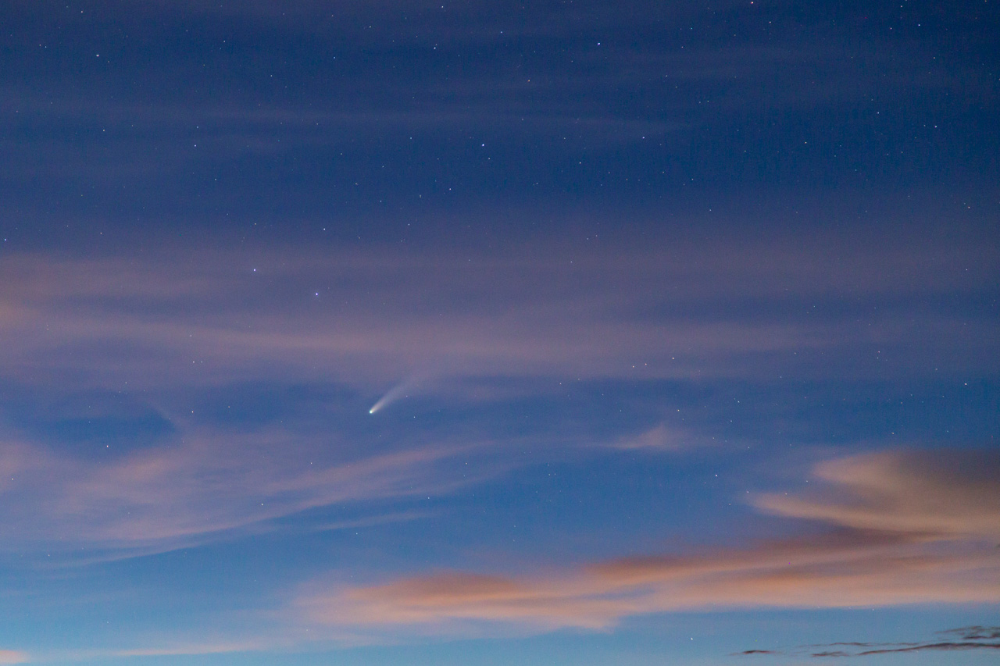
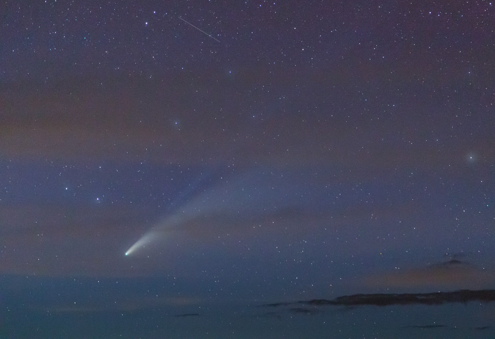
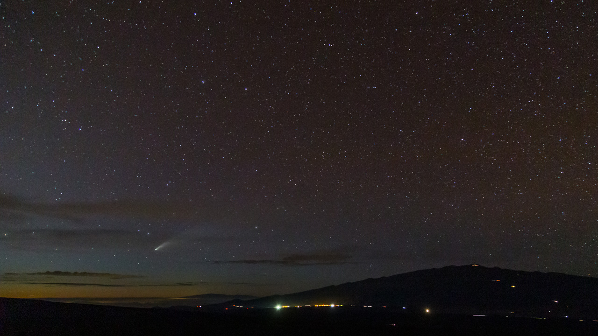
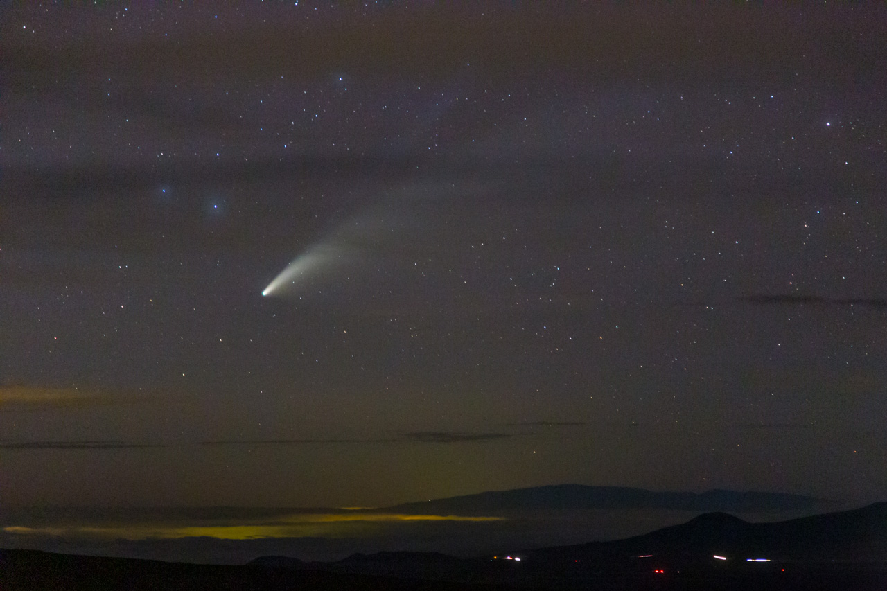

Comet NEOWISE in Twilight
On Friday evening I took a drive up the Mauna Loa access road to meet some friends to look for Comet NEOWISE (C/2020 F3). We found a few adjacent pullouts along the road and we all watched the northeastern horizon as it got dark looking for the comet. We eventually spotted it in binoculars through a gap in some cirrus that was skirting the horizon.
As it got dark, the comet and its tail became visible to the naked eye. The tail was an arc a few degrees long and could be traced maybe 5 degrees in binoculars. The view was somewhat limited by the cirrus, but the clouds did add some drama to photographs.

The comet with the last remnants of sunset colors in the clouds.

The comet with both tails (dust and ion) visible through the cirrus.

A wide field image of the comet setting next to Maunakea with Haleakala on the horizon.

The comet setting next to Haleakala.
I combined a few sequences of images together in to time lapse videos of the comet.
Thin cirrus clouds streaming past the comet as the last colors of sunset disappear from the clouds.
Comet NEOWISE sets behind Haleakala (on the island of Maui) with the west slope of Maunakea in the foreground.